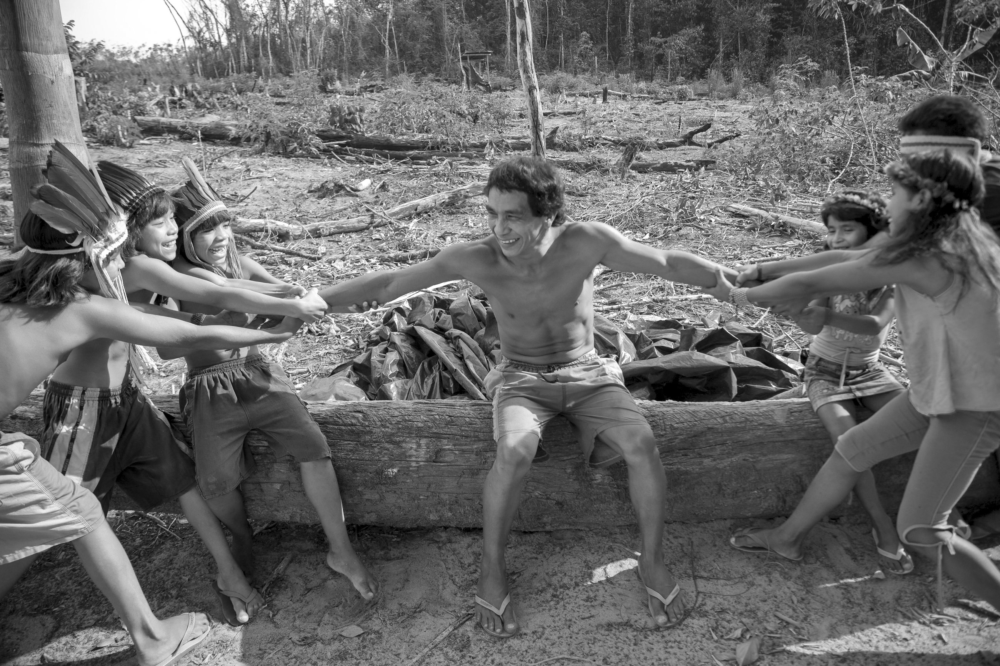
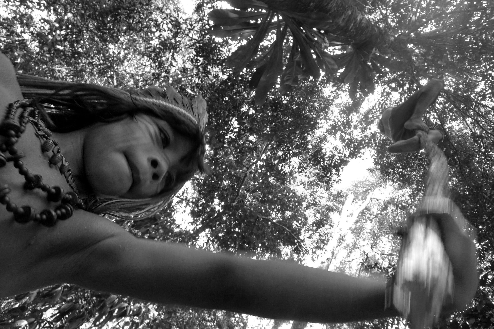

climasus+ Studio
Guia prático sobre clima, saúde e Amazônia
Do dado à decisão em saúde
Um guia visual para montar análises de saúde, clima e território no climasus+ Studio — sem precisar programar.

Foto: João Roberto Ripper | Acervo João Roberto Ripper / Fiocruz ImagensPara quem é este guia
Este guia é um curso de formação sobre clima e saúde e sobre o climasus+ Studio, o estúdio visual que permite montar e executar análises que cruzam dados de saúde, clima e território — sem precisar programar. Ele foi escrito para três públicos ao mesmo tempo:
Gestores públicos
Precisam decidir políticas de saúde informadas por risco climático e querem autonomia para consultar dados sem depender de um analista para cada pergunta.
Acadêmicos e pesquisadores
Precisam de rigor metodológico, parâmetros explícitos e reprodutibilidade nas análises que produzem — do DLNM à fração atribuível.
Comunidade em geral
Quer entender — e poder explicar a outras pessoas — por que o clima afeta a saúde no território onde vive, e o que os dados podem (e não podem) dizer.
Se você não sabe programar, não se preocupe: o Studio foi desenhado para que isso nunca seja necessário. Cada capítulo assume que este é o único material de apoio que você tem à mão.
Como o guia está organizado
O Studio pergunta, logo na primeira vez que você abre um projeto, “qual é o seu objetivo neste projeto?” e oferece dois Modos de uso: Vigilância e gestão (linguagem direta, parâmetros avançados recolhidos, foco em priorizar e agir) e Pesquisa avançada (linguagem técnica, parâmetros abertos, foco em estimar e publicar). Os dois modos compartilham os mesmos dados, projetos e resultados — só muda o que fica em primeiro plano. Este guia usa esse seletor como fio condutor e organiza a leitura em cinco partes.
O guia usa “Motor” para a camada que executa as análises. A linguagem técnica fica em segundo plano: o foco é aprender a formular uma pergunta, montar um Pipeline, verificar os dados, interpretar limites e transformar evidência em ação pública responsável.

Amazônia como ponto de partida
O guia nasce no ecossistema climaSUS, articulado ao Centro de Clima de Saúde de Rondônia, à Fiocruz Rondônia e ao INCT-CONEXAO. A Amazônia aparece aqui como ponto de partida — não como cenário decorativo, mas como território onde clima, floresta, água e saúde se apresentam juntos, e onde a distância entre uma série de dados e o posto de saúde é concreta.
Essa escolha orienta a identidade visual do guia: a tinta da floresta, a água do rio, o ocre da terra e as fotografias do acervo Fiocruz Imagens. O conteúdo, porém, é nacional: os mesmos conceitos e as mesmas funções valem para qualquer município brasileiro.
Do dado à decisão em saúde
Um guia visual para montar análises de saúde, clima e território no climasus+ Studio — sem precisar programar.
Amazônia como ponto de partida
O guia nasce no ecossistema climaSUS, articulado ao Centro de Clima de Saúde de Rondônia, à Fiocruz Rondônia e ao INCT-CONEXAO. A Amazônia aparece aqui como ponto de partida — não como cenário decorativo, mas como território onde clima, floresta, água e saúde se apresentam juntos. O conteúdo, porém, é nacional: os mesmos conceitos e as mesmas funções valem para qualquer município brasileiro.
Realização e apoio
O climasus+ Studio é parte do ecossistema climaSUS e do Centro de Clima de Saúde de Rondônia, com desenvolvimento articulado à Fiocruz Rondônia e ao INCT-CONEXAO.
Realização e apoio
O climasus+ Studio é parte do ecossistema climaSUS e do Centro de Clima de Saúde de Rondônia, com desenvolvimento articulado à Fiocruz Rondônia e ao INCT-CONEXAO. O guia prático é material de formação da rede: reúne conceitos de clima e saúde, o passo a passo do Pipeline e critérios para uso responsável dos resultados.
Baixar o Studio · Repositório no GitHub


Fotografias: João Roberto Ripper | Acervo João Roberto Ripper / Fiocruz Imagens, sob licença de uso não comercial (by-nc). Créditos completos em Sobre esta edição.